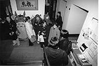
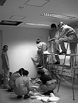
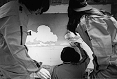
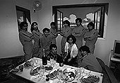

97.12.2（火）
先月一杯で日本テレビに戻ってしまった菅野さんに代わって、新しいCGスタッフ泉津井氏が今日から出勤。
芳尾、賀川両氏が先行作画IN。年明けの本格的作画INに向け、作画のパターン作り。芳尾氏24CUT、賀川さん9CUT。
ダビッドのつてでフランスの漫画家フレデリック・ボアレ氏が来週来社することになり、高畑監督等はダビッドから借りた、フランス語で描かれた彼の漫画を解読している。
97.12.3（水）
高畑監督、保田さんらと武蔵野西部図書館へ、資料の絵本を探しに行く。
絵コンテ9CUT、133秒分アップ。
立ちポーズからのあぐらのかきかたについて、高畑監督が社内の何人かにアンケート。「足をクロスさせながら座る」と「座ってから足を組む」の2グループに別れる。
97.12.4（木）
現在ジブリでは建物に隣接するサーバールームを建設中であるが、今日はその配線工事でデジぺのコンピュータがストップするため、仕上はお休み。
97.12.5（金）
平日だというのに、それぞれの部署をお休みにして、仕上、美術部門の新人研修生選考実技試験及び面接が行われる。結果は、2部門とも2名ずつ合格。これで来年度の新人は、近年では最多の11人となる。しかし、もう入る場所が無いぞ…。
97.12.6（土）
次回の作打ちから絵コンテの拡大コピーを、あらかじめ原画担当者に渡してから打ち合わせを行うことにする。拡大率は、コンテの上下の外枠を内側に入れる基準で、A3のコンテ用紙から229％とする。
大画面で見た感じをつかもうと、田辺さんの描いたイメージボードをビデオカメラを通しプロジェクターでスクリーンに投影してみる。
一村教授も野中さんに習って引っ越しを計画しているらしいのだが、不動産屋に紹介された物件が、2Kのマンションで六万五千円と家賃が異常に安い為、ラッキーと思いつつも、何かあるのではないかと躊躇している。
97.12.8（月）
高畑監督から作画フレームを変更したい、と提案がある。早速試しにレイアウト用紙を1,000枚ほど注文。
芳尾氏レイアウト終了。原画作業へ。
OS8を一村教授に入れてもらうが、ネットワークにつながらず、復旧に夜までかかる。
秋には完成するはずが、結局恒例の年末忘年会ビデオになりつつある、伊藤氏のドキュメンタリー「ツール・ド・信州」であるが、現在プレミアを駆使して急ピッチで作業が進行中。昨年、忘年会前にビデオを完成させた実績を持つ、お目付け役の撮影部、古城氏がついているので、年末までには完成するはずだが、古城氏は「鞭は入れているんですが、なかなか第4コーナーにたどり着けない」と嘆いている。
97.12.9（火）
いよいよ原画作業に入ろうという段階なのだが、手法が特殊な上、デジタルペイントも加わり、手順についてかなりの混乱がみられる。慣れるしかないのか。
夕方のラッシュ時に、ジブリから最も近い踏切で人身事故があり、中央線がストップ。都心に外出していた、撮影部、CG部らの面々は、新宿から東小金井まで2時間かけて帰社。
97.12.10（水）
作画の参考にゴザとテーブルをメインスタッフコーナーに持ち込み簡易和室を作る。早速約2名が夕食の店屋物をそこで座って食べる。いつもと視線が違うため、同じ場所でも新鮮に見え、味も違って感じられる。ちなみにメニューは「うな玉丼」に「納豆定食」。
97.12.11（木）
芳尾君のラフ原画が1CUT上がる。早速QARで念入りにチェック。
二木さんがじゃがいもをふかす。それに添えられた「明太バター」が絶品。
コミックボックスの三好氏と平林嬢が、コミックボックスの批評特集号を持って来社。あぶない意見も載っているので宮崎監督に見つからないようにこそこそ。
明日、SMAPの香取慎吾と中居正広両氏が来社することになり、夜中にその打ち合わせ。
97.12.12（金）
芳尾君が昨日のQARの直しを再び高畑監督にチェックしてもらう。
日本テレビの新春特番「夢は今すぐやんなきゃスペシャル」（仮題）の収録で香取慎吾、中居正広両氏が午後7時すぎに来社。社内を廻り近藤喜文さんや保田さんからアニメーションの作り方の解説等を受ける。当然女性陣を中心に社内は騒然、というか狂乱状態（ちょっと大げさか）。結局ジブリで香取氏の夢であるアニメ作りを手伝うことになる。さてどうなることやら。（放映日 1998年1月2日（金）17時～19時）

97.12.13（土）
フランス人漫画家のフレデリック・ボアレ氏が来社。「ファンタジーよりリアルなものが好き」という氏は、わりと意見の合う高畑監督と2時間にわたり歓談。
会議室にて、プロジェクターによるイメージボードの上映会が行われる。
97.12.15（月）
先日から何度もQRAにかけていたCUT17が一応OKとなる。しかしまだ高畑監督も動きに関して「これだ」と言える確信が持てていないようなので、何度も試行錯誤を続けるしかないようだ。
賀川さんが担当したシーン5-5のCUT1をQRAにかけチェック。
音響監督の若林氏が来社。高畑監督と初打ち合わせ。
97.12.16（火）
会議室にてイメージボードを見ながら、高畑監督と美術の田中直哉、武重両氏が話し合いを持つ。高畑監督から全体の方向性の話しアリ。
香取慎吾氏が再び来社。香取氏の描いた動画をコンピュータに取り込む。しかし忙しい中、かなりの枚数の動画を描いてきたのには驚いた。社内の動画スタッフより間違いなく早い。
97.12.17（水）
頼んでいた特殊サイズのレイアウト用紙が上がってくる。
ここ5年ほど社内で忘年会を開いてきたが、今年は珍しく吉祥寺で行うことに。という訳で目当ての店へ試食に行く。
現在一階では、撮影部とCG部を合体した部屋を作るべく工事中であるが、宮崎監督が、百瀬さんが座る予定の場所に窓がまったく無いことを指摘、その対策として、壁に「窓とその外にひろがる草原を描くべし」と美術部に依頼する。工事が一段落着いた夕方より、絵の具が付かない様にと、近くの作業着屋から買ったお揃いのオレンジのつなぎ（ほとんどウルトラなんたらの，ほにゃらら警備隊といった感じだ）に身を包んだ美術スタッフが下地の塗りを開始、明日一杯で心和む風景が壁に描かれるはず。
97.12.18（木）
2月より原画に入る予定の○○さんが来社。高畑監督らメインスタッフと食事をしながら、作品についての話しをする。
資料用にと、日本テレビの奥田さんに頼んであった、野球のビデオが宅急便で送られてくる。
美術部が壁に本格的な作画作業を開始。入れ替わり立ち代わり見物に来る他のスタッフが見守る中、順調に作業が進む。夜には宮崎監督が様子を見に現れ、あれこれと注文をつけるが、夜の11時頃にはだいたいが完成する。ただし、まだ完璧なものではないということなので、床の工事作業の様子を見ながら、CG室完成まで細かな手を入れていく予定。


97.12.19（金）
ジブリの制作用の車の１台は、鈴木プロデューサーのお下がりであるシビックシャトルを使っている。ところでこの車も、走行距離がそろそろ十万キロ近くにもなり、ボディも、へんなところが凹んで、助手席のドアが開けづらいまでにぼろぼろになりつつある。そこで凹んだ部分だけでもなんとかしようということになり、早速制作部の鈴木君（因みにジブリには現在鈴木が5人いる）がバール等工具を持ちだし、ボディの修理にかかる。結果、見事にドアは開くようになり、見栄えも遠くから見ればかなり良くなる。
野中氏引っ越し開始。ついでに一村氏も。
97.12.20（土）
7時よりバーにて、ツール・ド・信州の忘年会が開かれる。目玉は勿論、伊藤君がこの日のために○カ月も仕事を放り出して（宮崎監督がまだかまだかと催促するからやらざるを得なかったと言うべきか…）完成させたドキュメンタリー「ツール・ド・信州97」の、予告編。「あれだけ時間をかけて完成したのは予告編かい」という非難が上がるかと思われたが、この予告編の出来が素晴らしかった為、宮崎監督をはじめ、全員がおお喜び。みんな後半惨めな走り方をしていたはずなのに、画面に映し出された全員がカッコイイことカッコイイこと。おかげで、レースが終了した時点では「2度と走るか！」と言っていた人たちが「来年のレースは…」と盛り上がっていた。
97.12.22（月）
1階の改装工事がほぼ終了し、引っ越しが始まる。CG部は半年に1回は引っ越しをしているので、まだ前回の引っ越しから開けずに置いてあった段ボールもあるという。
デジタル会議を開催する予定も、高畑、鈴木プロデューサー両名が急用のため後日に延期。
97.12.23（火）
若林さんと2度目の打ち合わせ。声の出演者のリストアップ。次の打ち合わせは年開け早々の予定。
97.12.24（水）
資料用にヒッチコックの「知りすぎていた男」のビデオを借りてくる。
声の出演者候補が出ているテレビ番組を、情報誌をもとにチェック。録れるものはビデオに録画していく。
CG室の絵が完成＆引っ越しがほぼ終了する。クリスマスイブということもあり、その絵を前にして完成記念パーティが行われる。

97.12.25（木）
3時よりデジタル関連会議が行われる。各部署から20人以上が参加し、デジタルにおける動画の描き方、チェックの仕方等の作業手順や、それに付随する様々な問題点が話し合われる。
日本タレント名鑑CD-ROMを購入。あらゆる検索ができるのが面白い。
夕方クリスマスケーキが配られる。余ったのを良い事に2.5個程食べたら吐き気が…
97.12.26（金）
吉祥寺にて明日の忘年会用に、ビンゴの景品を買いあさる。
田辺さんの次の絵コンテが完成、すぐに高畑さんが秒数を入れる。12CUT、112秒で、総CUT264、総秒数は1,327秒（22分7秒）となる。
97.12.27（土）
仕事収め。いつもの年は午後からはじめる大掃除を今年は朝から始める。窓、網戸から壁、蛍光灯にいたるまで徹底的にお掃除。
6時より吉祥寺タイムマジックにて忘年会。
| 次のページへ |
| 日誌索引へ戻る |